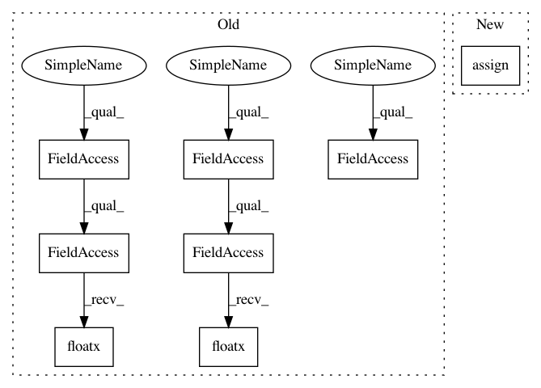

2a64a9d6d97a5c203bd58c0d039eb7e63c07e80f,snntoolbox/simulation/backends/inisim/ttfs.py,SpikeLayer,init_membrane_potential,#SpikeLayer#Any#Any#,185
Before Change
output_shape = self.output_shape
if mode == "uniform":
init_mem = k.random_uniform(output_shape,
-self._v_thresh, self._v_thresh)
elif mode == "bias":
init_mem = np.zeros(output_shape, k.floatx())
if hasattr(self, "bias"):
bias = self.get_weights()[1]
for i in range(len(bias)):
// Todo: This assumes data_format = "channels_first"
init_mem[:, i, Ellipsis] = bias[i]
self.add_update([(self.bias, np.zeros_like(bias))])
else: // mode == "zero":
init_mem = np.zeros(output_shape, k.floatx())
return init_mem
def reset_spikevars(self, sample_idx):
After Change
for i in range(len(bias)):
// Todo: This assumes data_format = "channels_first"
init_mem[:, i, Ellipsis] = bias[i]
self.bias.assign(tf.zeros_like(bias))
else: // mode == "zero":
init_mem = tf.zeros(output_shape, self._floatx)
return init_mem
In pattern: SUPERPATTERN
Frequency: 3
Non-data size: 8
Instances
Project Name: NeuromorphicProcessorProject/snn_toolbox
Commit Name: 2a64a9d6d97a5c203bd58c0d039eb7e63c07e80f
Time: 2020-09-28
Author: bodo.rueckauer@gmail.com
File Name: snntoolbox/simulation/backends/inisim/ttfs.py
Class Name: SpikeLayer
Method Name: init_membrane_potential
Project Name: NeuromorphicProcessorProject/snn_toolbox
Commit Name: 2a64a9d6d97a5c203bd58c0d039eb7e63c07e80f
Time: 2020-09-28
Author: bodo.rueckauer@gmail.com
File Name: snntoolbox/simulation/backends/inisim/ttfs.py
Class Name: SpikeLayer
Method Name: init_membrane_potential
Project Name: NeuromorphicProcessorProject/snn_toolbox
Commit Name: 2a64a9d6d97a5c203bd58c0d039eb7e63c07e80f
Time: 2020-09-28
Author: bodo.rueckauer@gmail.com
File Name: snntoolbox/simulation/backends/inisim/ttfs.py
Class Name: SpikeLayer
Method Name: update_neurons
Project Name: NeuromorphicProcessorProject/snn_toolbox
Commit Name: 2a64a9d6d97a5c203bd58c0d039eb7e63c07e80f
Time: 2020-09-28
Author: bodo.rueckauer@gmail.com
File Name: snntoolbox/simulation/backends/inisim/ttfs.py
Class Name: SpikeMaxPooling2D
Method Name: call